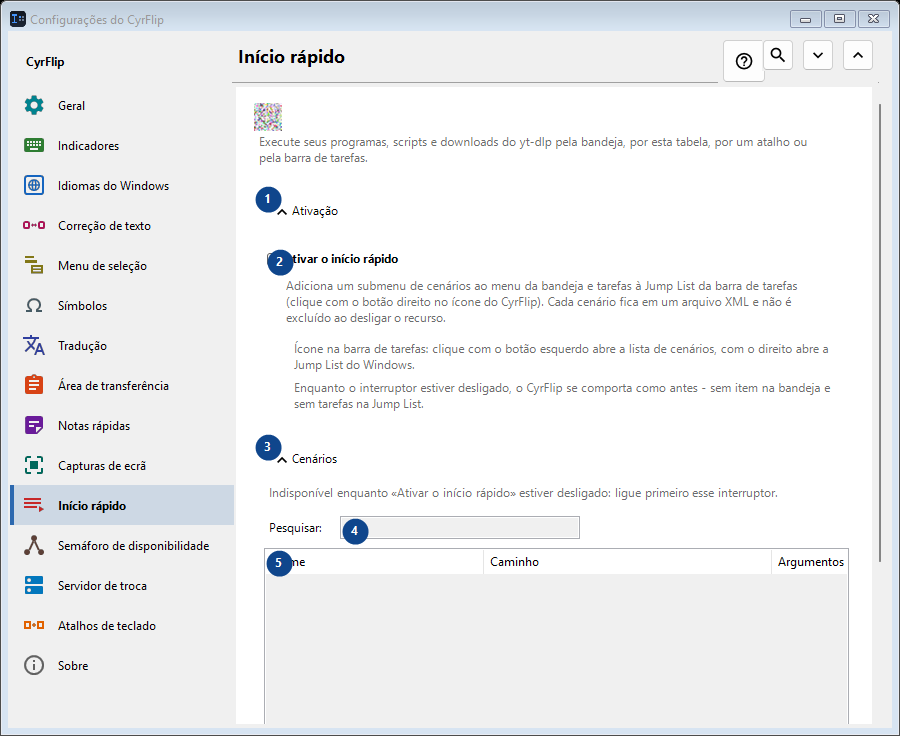
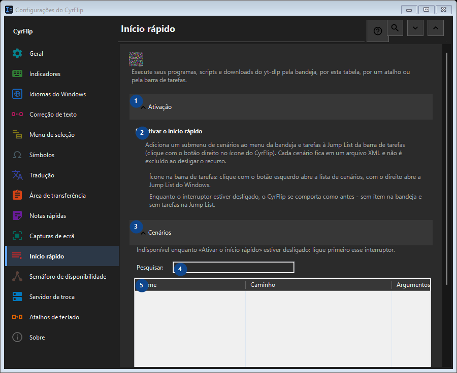

Início rápido
Para que serve
Execute seus programas, scripts e downloads do yt-dlp pela bandeja, por esta tabela, por um atalho ou pela barra de tarefas.


Ordem de utilização
As definições são aplicadas de imediato. Não existe uma ordem obrigatória; use os grupos abaixo.
Elementos
1. Ativação
Use este comando para a ação indicada. Leia qualquer confirmação antes de aceitar.
Os seus atalhos2. Ativar o início rápido
Adiciona um submenu de cenários ao menu da bandeja e tarefas à Jump List da barra de tarefas (clique com o botão direito no ícone do CyrFlip). Cada cenário fica em um arquivo XML e não é excluído ao desligar o recurso.
Os seus atalhos3. Cenários
Use este comando para a ação indicada. Leia qualquer confirmação antes de aceitar.
Os seus atalhos4. Pesquisar
Indisponível enquanto «Ativar o início rápido» estiver desligado: ligue primeiro esse interruptor. Este elemento não está disponível. Ative primeiro a função ou selecione uma entrada.
Os seus atalhos5. Início rápido
Indisponível enquanto «Ativar o início rápido» estiver desligado: ligue primeiro esse interruptor. Este elemento não está disponível. Ative primeiro a função ou selecione uma entrada. Nome / Caminho / Argumentos / Pasta de trabalho / Admin / Atalho
Os seus atalhos6. Adicionar...
Indisponível enquanto «Ativar o início rápido» estiver desligado: ligue primeiro esse interruptor. Este elemento não está disponível. Ative primeiro a função ou selecione uma entrada.
Os seus atalhos7. Alterar...
Indisponível enquanto «Ativar o início rápido» estiver desligado: ligue primeiro esse interruptor. Este elemento não está disponível. Ative primeiro a função ou selecione uma entrada.
Os seus atalhos8. Executar
Indisponível enquanto «Ativar o início rápido» estiver desligado: ligue primeiro esse interruptor. Este elemento não está disponível. Ative primeiro a função ou selecione uma entrada.
Os seus atalhos9. Clonar
Indisponível enquanto «Ativar o início rápido» estiver desligado: ligue primeiro esse interruptor. Este elemento não está disponível. Ative primeiro a função ou selecione uma entrada.
Os seus atalhos10. Excluir
Indisponível enquanto «Ativar o início rápido» estiver desligado: ligue primeiro esse interruptor. Este elemento não está disponível. Ative primeiro a função ou selecione uma entrada.
Os seus atalhos11. Mover para cima
Indisponível enquanto «Ativar o início rápido» estiver desligado: ligue primeiro esse interruptor. Este elemento não está disponível. Ative primeiro a função ou selecione uma entrada.
Os seus atalhos12. Mover para baixo
Indisponível enquanto «Ativar o início rápido» estiver desligado: ligue primeiro esse interruptor. Este elemento não está disponível. Ative primeiro a função ou selecione uma entrada.
Os seus atalhos13. Exportar...
Indisponível enquanto «Ativar o início rápido» estiver desligado: ligue primeiro esse interruptor. Este elemento não está disponível. Ative primeiro a função ou selecione uma entrada.
Os seus atalhos14. Importar...
Indisponível enquanto «Ativar o início rápido» estiver desligado: ligue primeiro esse interruptor. Este elemento não está disponível. Ative primeiro a função ou selecione uma entrada.
Os seus atalhos15. Importar do OneClickRunner...
Indisponível enquanto «Ativar o início rápido» estiver desligado: ligue primeiro esse interruptor. Este elemento não está disponível. Ative primeiro a função ou selecione uma entrada.
Os seus atalhos